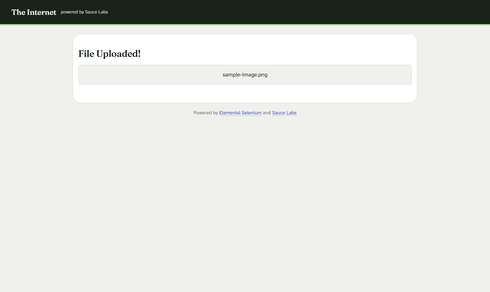
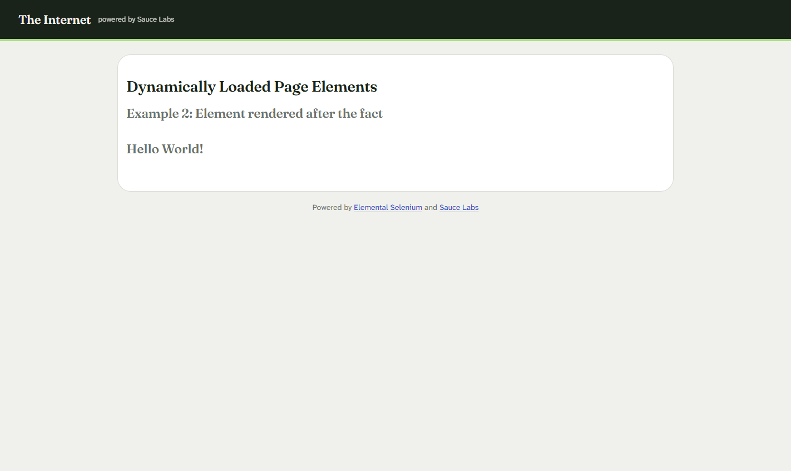

5 passed · 0 failed · 0 skipped
mvn -B -ntp clean test — BUILD SUCCESS in 41.522 seconds.
Source revision: 76b78067aba85d975b342f52be584325355d2fad
| Test | Result | Method duration |
|---|---|---|
| createsBookAndEchoesPayload | PASS | 5.133s |
| getsExistingBook | PASS | 0.435s |
| rejectsMissingBook | PASS | 0.363s |
| displaysDynamicallyLoadedText | PASS | 10.278s |
| uploadsSmallImage | PASS | 3.514s |
Full TestNG report · Compact report · Execution log · Verification details


A separate GET for created ID 501 returned 404: this fake API did not persist the submitted book in the observed run. The tests intentionally do not assume persistence.